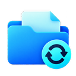

Otomatik indirme
Arka planda her saat kontrol eder, yeni bir şey geldiğinde bildirim gösterir.

Blackboard SyncmacOS ve Windows için
Blackboard’daki ders içeriklerini otomatik olarak bilgisayarına indirir.
GitHub’da inceleÜcretsiz. Açık kaynaklı. Derslerine odaklan.
Daha az uğraş, daha çok zaman
Arka planda her saat kontrol eder, yeni bir şey geldiğinde bildirim gösterir.
Dosyalar, dönem ve ders yapısıyla University klasörüne kaydedilir.
Yanlışlıkla sildiğin dosyaları seçip geri indirebilirsin.
Geçmiş bir dönemin dosyalarını tek seferde indirebilirsin.
Yeni sürüm çıkınca bildirim gelir, Güncelle’ye basman yeter.
Ayarlar’dan uygulamayı ve verilerini tek düğmeyle kaldırabilirsin.
İndir. Kur. Giriş yap.
.dmg dosyasını aç, uygulamayı Applications klasörüne sürükle.
Setup.exe dosyasını çalıştır. SmartScreen uyarısı çıkarsa Ek bilgi → Yine de çalıştır.
İlk açılışta okul adresini ve kayıt klasörünü seç, ardından Giriş yap.
Şifreni yalnızca okulunun kendi giriş sayfasına yazarsın; uygulama şifreni görmez ve hiçbir yere kaydetmez. Giriş oturumu yalnızca kendi bilgisayarında tutulur ve hiçbir sunucuya gönderilmez.